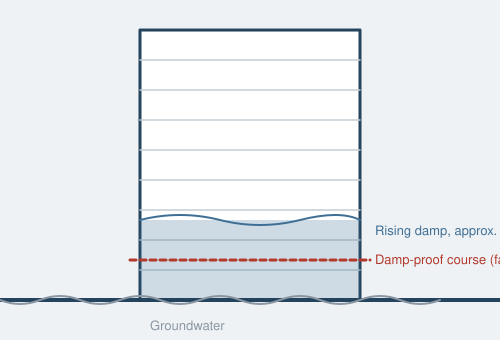

Damp-related issues are the single most common finding in our Level 3 Building Surveys. Here's what the different types mean, how serious they are, and what repairs typically cost.

Groundwater drawn up through masonry by capillary action, usually where a damp-proof course (DPC) is missing, damaged, or "bridged" by raised external ground levels or solid flooring butted against a wall. Common in pre-1920s properties built before DPCs were standard. Look for tide-mark staining and crumbling plaster up to roughly a metre above floor level.
Water entering from outside through a defect — cracked render, failed pointing, a leaking gutter, a defective roof, or porous brickwork. Unlike rising damp it can appear at any height and often correlates with a specific external defect that, once repaired, resolves the issue.
By far the most common damp issue in occupied homes, caused by warm, moist air meeting cold surfaces — particularly in bathrooms, kitchens and poorly ventilated bedrooms. Often mistaken for rising or penetrating damp but usually resolved with better ventilation, insulation and heating patterns rather than structural repair.
Condensation forming within a wall or roof structure rather than on a visible surface — a growing risk in older solid-wall properties that have been retrofitted with modern insulation or vapour-tight materials without proper detailing. Harder to detect visually and sometimes requires specialist investigation.
Occurs where timber stays consistently damp — around leaking gutters, defective flashings, or damp sills and floor joists. Generally localised to the wet area and resolved by fixing the moisture source and replacing affected timber.
The most serious form of timber decay. Despite the name, it needs damp timber to start, but can then spread through masonry and plaster in search of new timber to attack, even into apparently dry areas. Identifiable by a musty smell, cotton-wool-like fungal growth, and rust-coloured spore dust. Treatment is more invasive and costly than wet rot, sometimes requiring removal of affected plaster and masonry as well as timber.
Small round exit holes in structural and decorative timber, most commonly from common furniture beetle. Historic, treated infestation is common in older properties and not automatically a concern; active, untreated infestation in structural timber (roof or floor joists) needs professional assessment and treatment.
A Level 3 Building Survey identifies damp and decay before you commit to buy.
Request a Free Estimate